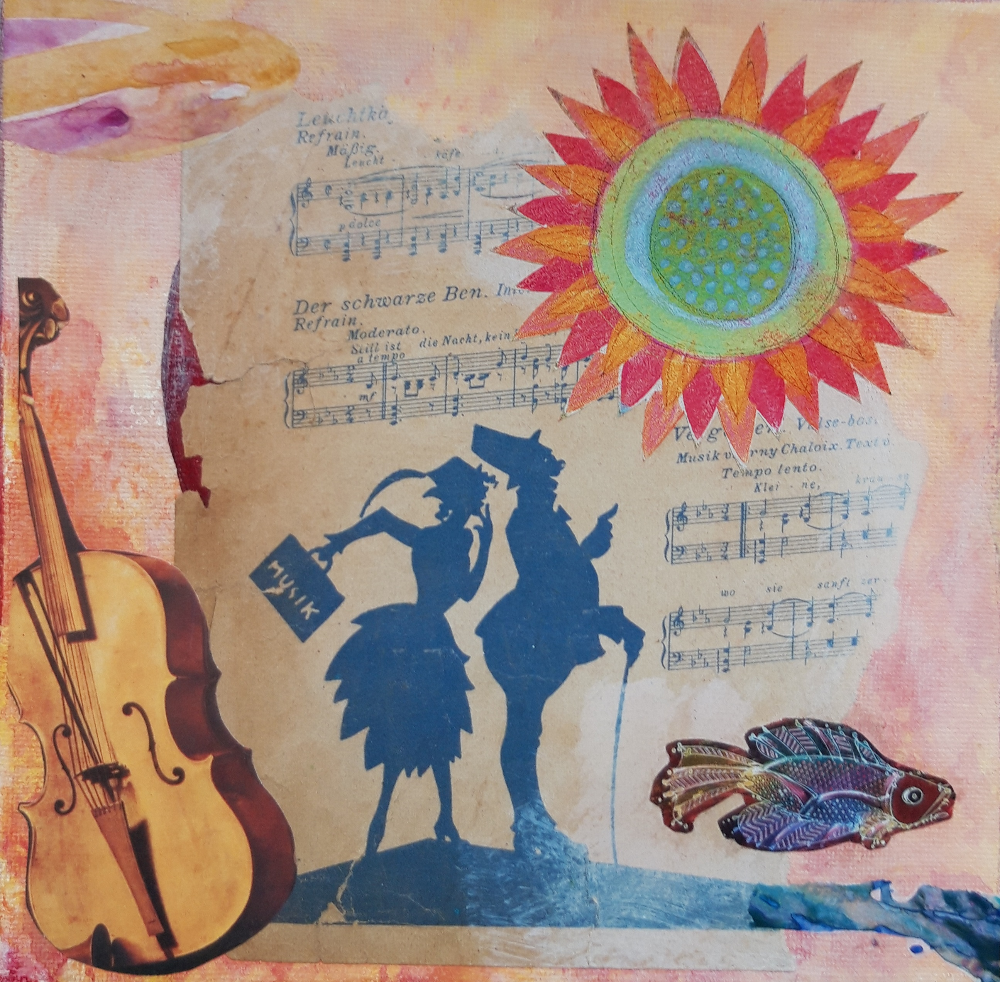
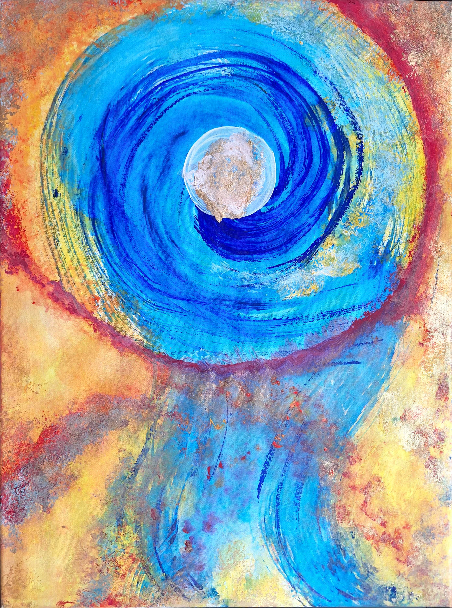
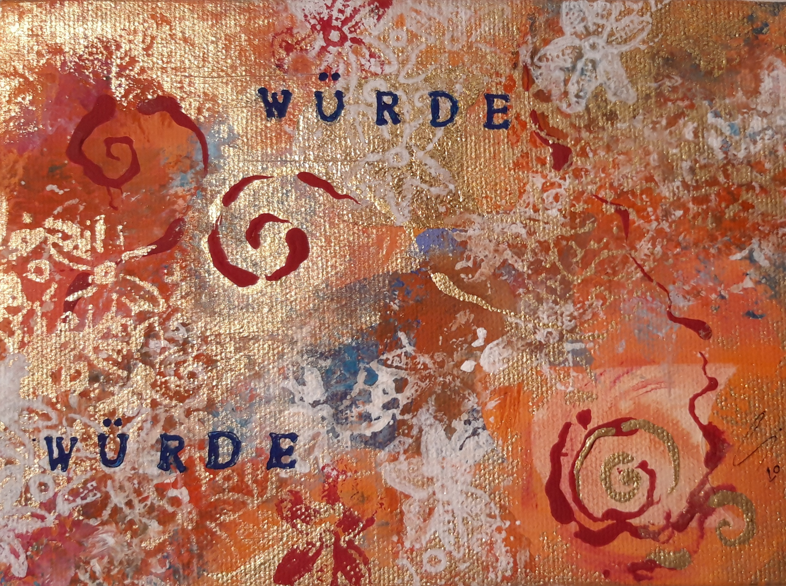

Bildergalerie




Susanne Henzel – Atelier für intuitives Malen & kreative Entfaltung
Aus der Fähigkeit zur Hingabe wächst uns eine große Kraft.
Hier entsteht derzeit die neue Website von Rayo de Sol.
Im Atelier stehen kreativer Ausdruck, intuitives Malen und die Entfaltung persönlicher Ressourcen im Mittelpunkt.
Kunst kann ein Weg sein, sich selbst neu zu entdecken, innere Prozesse sichtbar zu machen und Freude am Gestalten zu erleben.
Der freie, intuitive Ausdruck des Menschen dient der Entfaltung seiner schöpferischen Möglichkeiten. Im Wagnis künsterlischen Schaffens bildet sich die Kraft, dem eigenen Leben Gestalt zu verleihen. Hieraus erwächst eine Wertvolle Verbindung zu sich selbst - ein Raum, in dem Neues entstehen und des Eigene sichtbar werden darf.



Susanne Henzel
Atelier Rayo de Sol
Brunnenstraße 11
56203 Höhr-Grenzhausen
✉️ rayodesol@web.de
Die vollständige Website befindet sich derzeit im Aufbau. Weitere Informationen zu Kursen, Terminen und Angeboten folgen in Kürze.